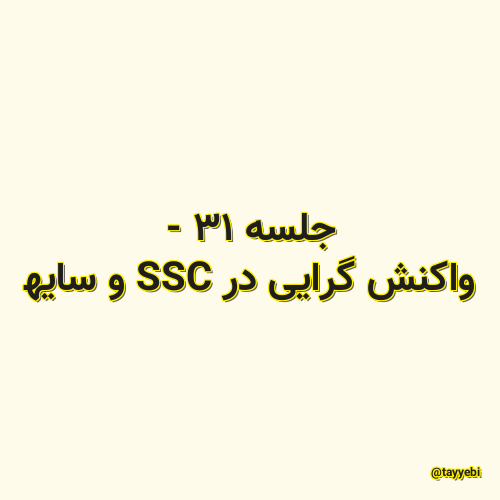

✖

جلسه ۱۳ - واکنش گرایی در CSS و سایه
باید سعی کنیم که دنیای مصنوعی به طبیعت نزدیک باشه. در دنیای طبیعی، وقتی که نور هست، سایه هم هست. وقتی که نیرو هست، حرکت هم هست. پس باید اینها رو توی برنامهها جا بدیم!
@tayyebi 2021-05-18 07:14:00 مطالعه پست گزارش خرابی لینک / محتوای مجرمانه / تغییر محتویات لینک